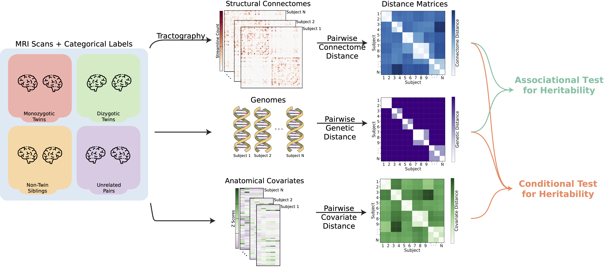
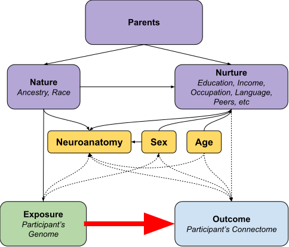
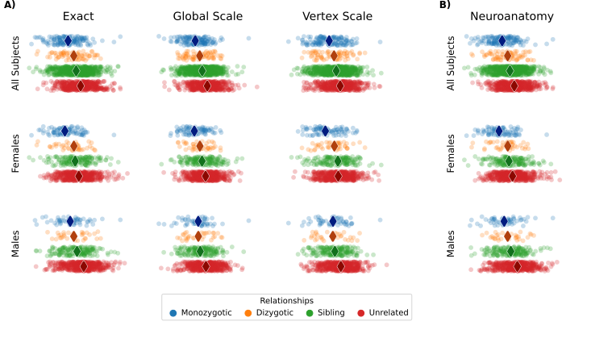
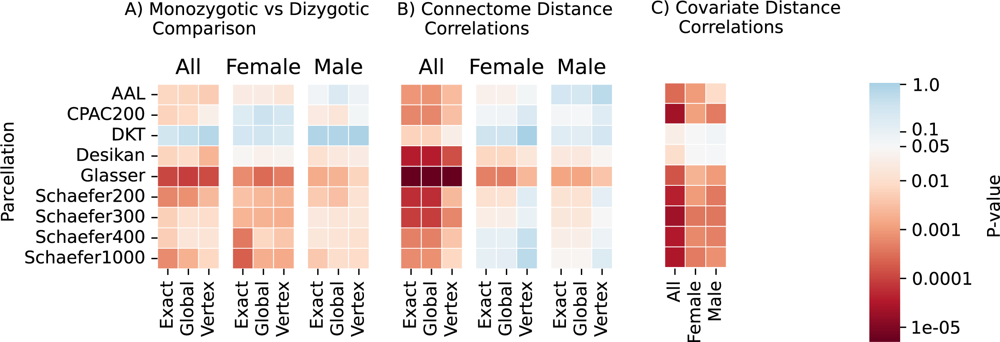
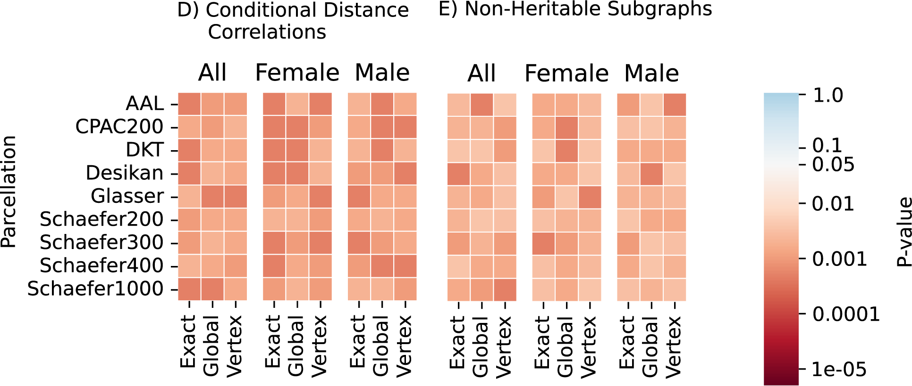

Statistical Modeling of Structural Connectomes Reveal High Genetic Influence on Connectivity#
Jaewon Chung1*, Eric Bridgeford1, Michael Powell1, Joshua T. Vogelstein1#
1 - Johns Hopkins University, \(\ast\) - correspondence:  j1c@jhu.edu
j1c@jhu.edu  @j1c(Github)
@j1c(Github)  @j1chung(Twitter)#
@j1chung(Twitter)#

Summary
Aimed to define heritability for populations of connectomes using statistical modelling.
Structural connectomes are heritable without controlling for neuroanatomy.
Neuroanatomy is also highly heritable
Connectomes remain heritable after controlling for effects of neuroanatomy on connectomes.
Provide tools for future analysis on populations of connectomes.
Motivation#
Understanding how brain connectivity is influenced by genetics can improve our understanding of brain function and diseases.
Current methods of analyzing connectomes or hertability exhibit limitations:
Selection Graph theoretic features
Multivariate normality assumptions
Overview of Analysis#
 Fig 1: Overview of the framework for measuring heritability of connectomes.
Do genomes cause connectomes?#
Causal Analysis of Effect of Genome on Connectomes#
Genome directly affects the structural connectome.
Neuroanatomy (e.g. brain volume) indirectly affects the connectome.
Participant history, such as the shared and non-shared environmental influences, and traits are potential confounders.
The shared and non-shared environment is controlled by comparing between the same sex individuals.
 Fig 2: Directed acyclic graph (DAG) illustrating potential relationships between the genome and connectome.
Associational Heritability for Connectomes and Neuroanatomy#
 Fig 3: Visualization of pairwise distances of connectomes and neuroanatomy. Diamonds represent the median. Median distances grow as genetic distances increase.
 Fig 4: Testing for associational heritability of connectomes and neuroanatomy. Red squares indicate significant tests; blue indicate non-significant tests.
Conditional Heritability of Connectomes#
 Fig 5: Testing for conditional heritability of connectomes. Red squares indicate significant tests; blue indicate non-significant tests.
Human Connectome Project 1200#
Structural connectomes are estimated using structural (sMRI) and diffusion magnetic resonance imaging (dMRI).
Monozygotic |
Dizygotic |
Non-twin siblings |
|
|---|---|---|---|
N |
322 |
212 |
490 |
Sex |
196 F, 126 M |
125 F, 87 M |
237 F, 253 M |
Age (mean) |
29.6 (3.3) |
28.9 (3.4) |
28.3 (3.9) |
Table 1: Participants and their demographics of HCP1200 Dataset.
Three Models of Connectomes#
Exact: Are the generative models of connectomes the same?
Global scale: Are the generative models same after considering global scaling?
Vertex scale: Are the generative models same after considering vertex wise scaling?
 Fig 3: Examples of the three different models (exact, global scale, and vertex scale) of connectome heritability visualized as adjacency matrices. Networks are sampled from stochastic block models (SBMs) with different block probabilities.
Fig 3: Examples of the three different models (exact, global scale, and vertex scale) of connectome heritability visualized as adjacency matrices. Networks are sampled from stochastic block models (SBMs) with different block probabilities.
Limitations and extensions#
Potential confounders that are not considered.
Other staitsical models to consider (e.g. COSIE [3]).
Repeated analysis on functional MRI or in other twin study datasets.